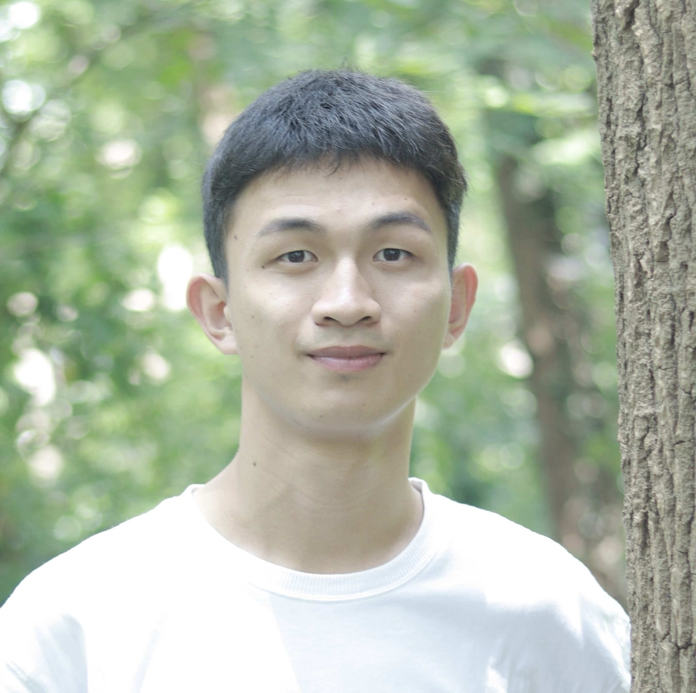

|  |
Zhiyuan Zhang
Operations Research and Engineering Management
Southern Methodist University
Email: zyzhang at smu dot edu
|
About Me
Hi! I'm a first-year Ph.D. student in the department of Operations Research and Engineering Management at Southern Methodist University, where I am fortunate to be advised by Dr. Harsha Gangammanavar. Before starting my Ph.D. studies, I earned an M.S. in Computational Mathematics from Xiamen University and a B.S. in Mathematics and Applied Mathematics from Hangzhou Dianzi University.
I am working on stochastic programming and large-scale optimization, in particular, multistage stochastic programming, sampling-based algorithm design, and nonsmooth optimization.
News
- July 2025: Our recent work, ``Comparative Study of Sampling-based Multistage Stochastic Linear Programming Algorithms", has been accepted for a poster presentation at ICCOPT 2025. (poster)
Preprints & Publications
- Z. Zhang and Z.-J. Bai, A mixed precision Jacobi method for the symmetric eigenvalue problem, arXiv preprint:2211.03339, 2022. (preprint)
- H. He and Z. Zhang, A unified Bregman alternating minimization algorithm for generalized DC programming with applications to image processing, J. Sci. Comput., 101 (2024) 76. (online)
- F. Jiang, Z. Zhang, and H. He, Solving saddle point problems: a landscape of primal-dual algorithm with larger stepsizes, J. Global Optim., 85 (2023) 821-846. (online)
- C.-S. Chuang, H. He, and Z. Zhang, A unified Douglas-Rachford algorithm for generalized DC programming, J. Global Optim., 82 (2022) 331-349. (online)
- Z. Zhang, C. Ling, H. He, and L. Qi, A tensor train approach for internet traffic data completion, Ann. Oper. Res., 339 (2024) 1461-1479. (online)
- Z. Zhang and H. He, A customized low-rank prior model for structured cartoon-texture image decomposition, Signal Process. Image Commun., 96 (2021) 116308. (online)